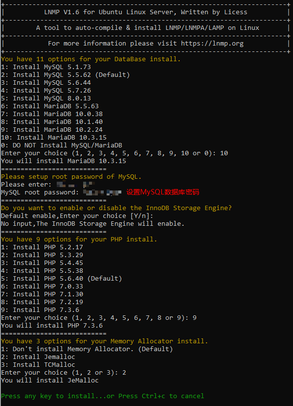
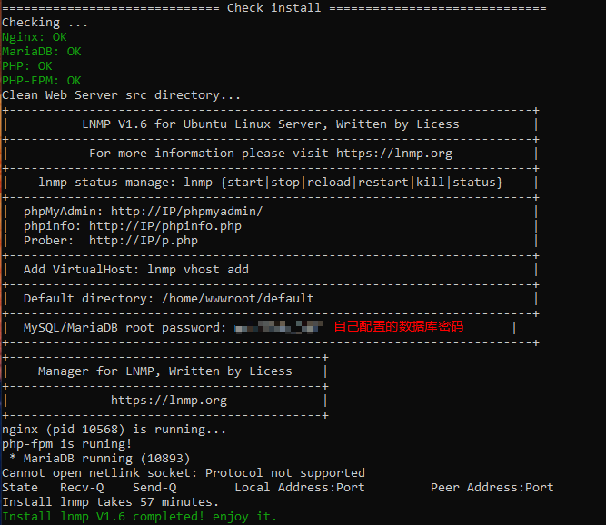
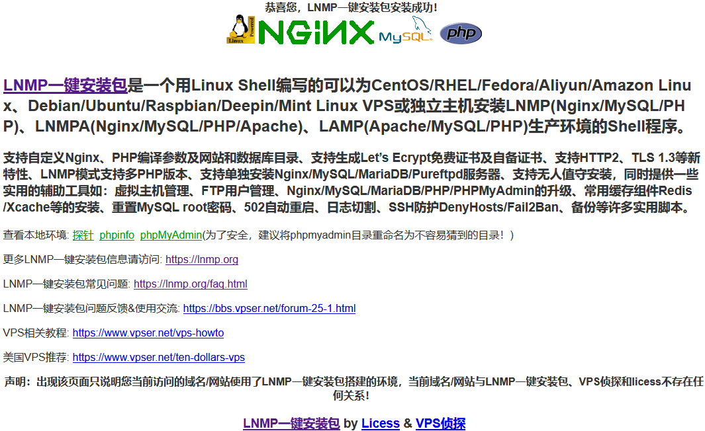

使用LNMP搭建WordPress个人网站
WordPress 是一个以 PHP 和 MySQL 为平台的 自由开源 的博客软件和 内容管理系统。其软件安装基本需求如下：
- PHP version 7.3 or greater.
- MySQL version 5.6 or greater OR MariaDB version 10.1 or greater.
- HTTPS support.
1. LNMP一键安装
1.1 更换国内软件源，提升下载速度
Ubuntu 18.04 系统安装完成后，更换源，提高软件下载安装速度。
1 | ## 备份源文件 |
将阿里源写入 sources.list 文件：
1 | #阿里云源 |
更新源后，使用 apt update && apt upgrade 升级系统。
1.2 安装 LNMP
纯净安装的系统下使用命令一键安装 LNMP：
1 | # wget http://soft.vpser.net/lnmp/lnmp1.6.tar.gz -cO lnmp1.6.tar.gz && tar zxf lnmp1.6.tar.gz && cd lnmp1.6 && ./install.sh lnmp |
选择合适的软件版本进行安装，安装时间从几十分钟到几十个小时不等，主要看网速。

安装完成后如下图所示：

在浏览器中键入 IP 地址，提示 LNMP 安装成功：

1.3 新建虚拟主机
LNMP 安装完成后，使用命令 lnmp vhost add 添加站点。
2. WordPress 安装
2.1 下载WordPress
在 WordPress 官网 下载 最新安装包。
2.2 安装 WordPress
将下载的安装包解压到虚拟主机根目录下 /home/wwwroot/maize.lab
2.3 配置 WordPress
3. 安装 WordPress 主题
4. 安装 WordPress 插件
5. 使用 WordPress 发表文章
6. WordPress 整合 FTP 服务
7. 使用域名访问网站
由于我们使用的本地局域网服务器搭建的网站，限制于内网访问，没有域名解析，所以可以在本地简单配置实现域名访问网站。
修改 C:\Windows\System32\drivers\etc\hosts 文件，在文件末尾添加：192.168.1.5 maize.lab
即可通过域名 maize.lab 访问网站主页。
参考链接
- Ubuntu 更换国内软件源：https://yq.aliyun.com/articles/639051
- 安装 lnmp：https://lnmp.org/install.html
- 添加/删除虚拟主机：https://lnmp.org/faq/lnmp-vhost-add-howto.html
- LNMP替换安装下载源镜像地址的方法：https://lnmp.org/faq/lnmp-download-source.html